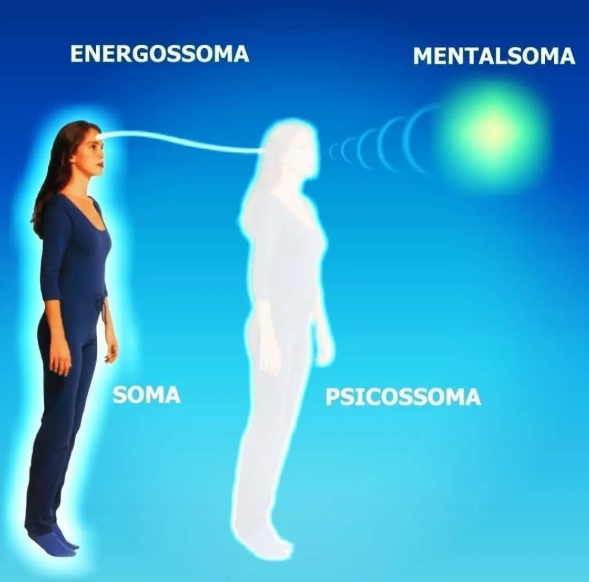

PROJECIOLOGIA
 |
 |
 |
Veja mais neste site sobre a PROJEÇÃO ASTRAL clicando aqui.
Obs.: Projeciologia e Projeção Astral na prática são a mesma coisa, com a diferença de que a Projeciologia é a ciência que trata especificamente o fenômeno da projeção da consciência. Esta ciência foi proposta pelo médico e parapsíquico Waldo Viera (1932-2015).
A Projeciologia é a ciência que estuda a Experiência fora do Corpo e como usar esse fenômeno como ferramenta de autopesquisa e evolução pessoal.
A Projeciologia é um subcampo ou especialidade da ciência Conscienciologia, que estuda as projeções da consciência para fora do corpo físico, ou seja, as ações da consciência (ego, self ou personalidade humana) em dimensões não físicas, livre do restringimento do corpo biológico. A ciência Projeciologia também investiga outros fenômenos projeciológicos, tais como: bilocação, clarividência, experiência de quase-morte (EQM), intuição, precognição, retrocognição, telepatia, entre outros. O termo projeciologia vem do Latim, projectio, projeção e do Grego, logos, tratado.

Pesquisas internacionais indicam que a projeção de modo consciente é alcançada e vivida por milhões de pessoas em todo planeta. Todos nós saímos do corpo, normalmente quando dormimos. No entanto, para a maioria da humanidade, falta lucidez durante a experiência extracorpórea e rememoração do fenômeno projetivo vivenciado. Por essa razão, muitos pensam que a projeção não existe. E por não trazerem dela uma lembrança clara, confundem-na com sonhos.
Trecho acima é do site: iipc.org/projeciologia/
PROJEÇÃO CONSCIENTE HUMANA
Definição. Projeção Consciente Humana: experiência peculiar de percepção do meio (ou ambiente), seja espontânea ou induzida, na qual o centro de consciência de alguém parece se situar em uma locação espacial separada do próprio corpo humano vivo (soma respirando); passagem da consciência do estado intrafísico para o estado projetado.
Definição retirada do livro 'Projeciologia - Panorama das experiências da consciência fora do corpo humano' - 10ª Edição. Autor: Waldo Vieira.
O desenvolvimento da ciência Projeciologia e o surgimento do IIPC
A ciência Projeciologia foi proposta em 1981, a partir da publicação do livro Projeções da Consciência, de autoria do médico e pesquisador Waldo Vieira, projetor consciente desde os 9 anos de idade. Em 1986, Waldo Vieira publica o tratado Projeciologia – Panorama das Experiências da Consciência Fora do Corpo Humano, hoje (2010), em sua 4ª edição, com 1232 páginas e 2040 referências bibliográficas, sendo considerado uma referência internacional sobre o estudo da projeção consciente.
Trecho acima é do site: iipc.org/projeciologia/
Sobre o IIPC
O INSTITUTO INTERNACIONAL DE PROJECIOLOGIA E CONSCIENCIOLOGIA – IIPC – é a instituição da Conscienciologia que estuda de forma científica as experiências fora do corpo, as bioenergias, os fenômenos projeciológicos, a autoconsciência e o desenvolvimento pessoal e parapsíquico.
O IIPC é uma instituição de Educação e Pesquisa Científica, pacifista, laica, universalista, sem fins de lucro, não doutrinária, independente, que se destaca pela excelência em cursos e publicações técnico-científicas sobre as ciências Projeciologia e Conscienciologia.
Fundado em 1988, o IIPC atende à sociedade nas áreas Educacional, Empresarial e de Saúde, por meio de estrutura administrativa, docente e de pesquisa, em sistema de voluntariado técnico-científico. Possui pesquisadores atuantes em diversos Centros Educacionais de Autopesquisa localizados nas principais cidades brasileiras e em uma representação no Exterior (Buenos Aires – AR).
Trecho acima é do site: iipc.org/quem-somos/
Site Oficial do IIPC: iipc.org
Canal Oficial do IIPC no YouTube: youtube.com/@iipcweb
Há diversas playlists no canal do IIPC no YouTube, de vídeos sobre o próprio instituto, sobre a Projeciologia, sobre o paradigma consciencial e seus ramos de pesquisa. Vale a pena maratonar, fica a dica!
Catalepsia Projetiva
Definição. Catalepsia (Grego: katalepsis, surpreender) projetiva: estado psicofísico caracterizado pelo enrijecimento dos membros, insensibilidade, respiração lenta e impossibilidade passageira de a consciência intrafísica lúcida mover o corpo humano estando sediada conscientemente dentro dele, em razão de uma dissociação entre a sensibilidade e as faculdades motoras.
Peso. Na experiência de catalepsia projetiva, logo no início da sua manifestação, a onsciência intrafísica sente que de certo modo está dentro da massa da matéria do corpo humano. Contudo, não consegue movimentá-la, como se fosse assoberbada por alguma reação física de peso que lhe dá a estranha impressão de que o corpo humano - ou o conjunto dos veículos de manifestações da própria consciência, o holossoma - pesa centenas de quilos, tendo a sensação de estar o corpo humano pressionado de encontro ao leito, o que impede a consciência de executar qualquer movimento muscular, por mínimo que seja.
Categorias. Há duas categorias básicas de catalepsia projetiva:
1. Antes. A catalepsia da ida, ou pré-projetiva.
2. Depois. A catalepsia de volta, ou pós-projetiva.
Extrafisicalidade. A catalepsia projetiva da ida ocorre quando a consciência sai do estado da vigília física ordinária e procura adentrar a dimensão extrafísica (no caso, a dimener ou a dimensão paratroposférica).
Interiorização. A catalepsia projetiva da volta surge quando a consciência projetada se interioriza no corpo humano e procura despertar fisicamente.
Página 130 - item 44, do livro Projeciologia de Waldo Vieira - 10ª Edição.
Explicando o fenômeno da catalepsia projetiva de outra forma:
Imagine a boneca matrioska, onde várias bonecas - cada uma de um tamanho diferente - se encaixam perfeitamente uma dentro da outra.
Matrioska (ou boneca russa) é um brinquedo artesanal tradicional da Rússia, composto por um conjunto de bonecas de madeira, pintadas à mão, que são ocas e se encaixam uma dentro da outra, da maior até a menor (que geralmente é a única sólida), simbolizando maternidade, fertilidade, família e continuidade da vida.
A analogia acima se compara com os nossos corpos da manifestação da consciência, que na Conscienciologia são descritos como Soma (corpo físico), energossoma (corpo das energias), psicossoma (corpo das emoções) e o Mentalssoma (corpo mental que não tem forma definida - geralmente representado nas imagens como uma bola dourada de energia).

Holossoma =🌻Soma + 🏵Energossoma + 🌸Psicossoma + 💮Mentalsoma
Imagem e descrição do Instagram consjuntas
Pois bem, explicando de forma direta: quando estamos acordados, em vigília física, nosso holossoma (o conjunto de todos os corpos de manifestação da consciência) está “encaixado”, ou seja, os corpos encontram-se ajustados uns aos outros.
A Catalepsia Projetiva (ou paralisia do sono) ocorre justamente nos momentos em que esses corpos estão se encaixando ou desencaixando. Isso pode acontecer tanto quando saímos para o plano astral em uma projeção da consciência — lúcida ou não — quanto quando retornamos desse plano.
Por esse motivo, esse estado pode ser aproveitado como uma oportunidade para alcançar uma projeção consciente e lúcida. Bon voyage!
Quem foi Waldo Vieira?
Waldo Vieira (1932-2015) foi um médico, dentista, autor e pesquisador brasileiro, conhecido por ser o fundador das ciências Conscienciologia e da Projeciologia, ciências que estudam a consciência e as experiências fora do corpo. Inicialmente parceiro de Chico Xavier, ele se separou do Espiritismo para desenvolver um estudo mais científico dos fenômenos paranormais, criando um vasto corpo de obras e a cidade de Cognópolis, em Foz do Iguaçu, um centro de pesquisa dedicado a esses estudos.
 |
 |
Waldo Vieira foi o propositor da Conscienciologia. Como pesquisador independente e professor desta ciência, publicou diversos livros e fundou instituições sem fins de lucro dedicadas à pesquisa da consciência. O seu tratado Projeciologia é, até os dias atuais, a obra mais completa sobre a projeção da consciência, fenômeno popularmente conhecido como projeção astral, viagem astral ou desdobramento.
O Professor Waldo, como era conhecido, nasceu em 12 de abril de 1932 na cidade mineira de Monte Carmelo. Desde tenra idade apresentou habilidades parapsíquicas notáveis e também se destacou por seu excepcional autodidatismo e erudição. Waldo Vieira teve sua primeira projeção da consciência lúcida aos nove anos de idade. O temperamento assistencial era outra característica marcante de Waldo Vieira. Com perfil determinado e empreendedor, por onde passou ele deixou um legado de melhorias e benefícios para todos à sua volta.
Formado em Medicina e Odontologia, frequentemente atendia parte de seus pacientes gratuitamente, assim como desenvolveu forte trabalho assistencial por meio do parapsiquismo. Fundou diversas instituições espíritas e até mesmo participou da criação de um bairro na cidade de Uberaba. No Espiritismo, trabalhou dos 23 aos 34 anos ao lado do médium Chico Xavier. Chegaram a psicografar 18 livros juntos, inclusive as obras Evolução em Dois Mundos e Desobsessão. Chico Xavier escreveu alguns capítulos a partir de Pedro Leopoldo/MG e Waldo Vieira escreveu outros capítulos em Uberaba/MG.
Por entender que os fenômenos parapsíquicos deveriam ser estudados sob ótica científica, Waldo Vieira deixou o movimento espírita, notadamente uma religião, em 1966, com 34 anos, e se dedicou a criar as bases da Ciência Projeciologia, precursora da Conscienciologia. Foi neste mesmo ano que ele deixou Uberaba e se mudou para o Rio de Janeiro, vindo posteriormente a realizar pós-graduação em Plástica e Cosmética, no Japão.
Trecho acima é do site do IIPC: iipc.org/esclarece/projeciologia/waldo-vieira/
Observação: Waldo Vieira "dessomou" (faleceu) em 2 de julho de 2015. Desde então a comunidade conscienciológica também o denomina de Zéfiro. Zérifo é nome que Waldo Vieira recebe nas dimensões extrafísicas.

Imagem acima é a foto do Waldo Vieira junto com Chico Xavier. No meio da imagem a capa do livro Desobsessão que foi escrito pelos dois. E no canto esquerdo da imagem, um retrato falado do espírito André Luiz
Chico Xavier e Waldo Vieira atuaram juntos como médiuns psicógrafos na psicografia de obras importantes, especialmente na coleção "A Vida no Mundo Espiritual" (espírito André Luiz) e em obras sobre mediunidade, como "Mecanismos da Mediunidade" e "Evolução em Dois Mundos", além de outros títulos como "Sexo e Destino", onde ambos colaboraram para dar forma às mensagens dos espíritos, consolidando uma parceria fundamental na literatura espírita.
Principais Livros em Colaboração:
- Mecanismos da Mediunidade: Aborda o funcionamento dos fenômenos mediúnicos.
- Evolução em Dois Mundos: Explora a vida espiritual e as leis de evolução.
- Sexo e Destino: Analisa as complexidades do amor, culpa e reencarnação sob a ótica espiritual.
- Opinião Espírita: Livro que reúne a visão dos espíritos Emmanuel e André Luiz, psicografado por ambos.
Livros da Conscienciologia:
Depois de romper com Chico Xavier e com o Espiritismo, Waldo Vieira dedicou-se à criação da Conscienciologia, tornando-se autor de numerosas obras sobre o tema.

Os principais livros/tratados (que inclusive aparecem na imagem acima) são: Projeciologia; 700 Experimentos da Conscienciologia; Homo Sapiens Pacificus; Homo Sapiens Reurbanisatus; Projeções da Consciência e a Enciclopédia da Conscienciologia (que é mantida e atualizada até os dias de hoje pelos voluntários da conscienciologia).
Outras obras são: O que é a Conscienciologia; Manual da Tenepes; Manual da Proéxis; Manual da Dupla Evolutiva; Nossa Evolução; Conscienciograma e várias outras obras que você pode encontrar nos principais sites da Conscienciologia, como a EDITARES que é a editora da conscienciologia, onde você também encontra as obras dos diversos outros autores da conscieciologia.
 |
 |
 |
 |